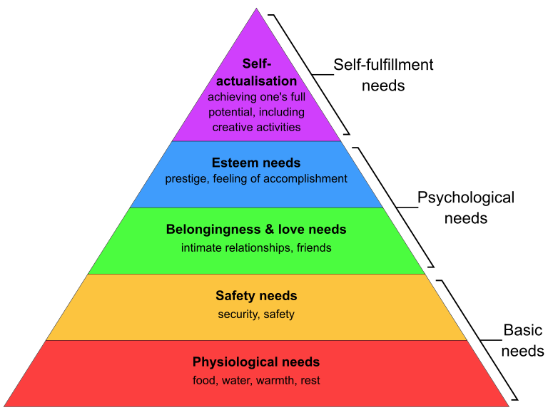
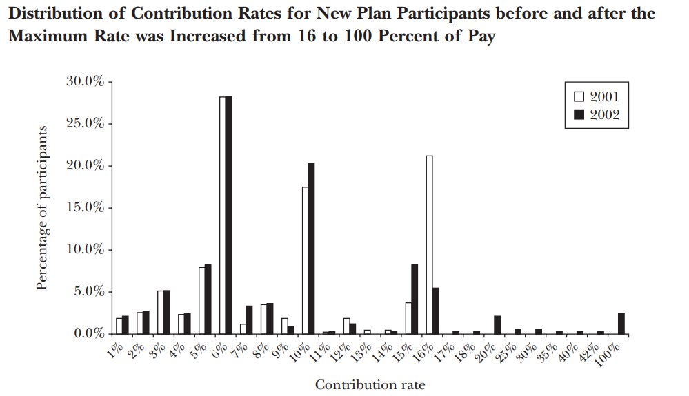

Day 3: Bounds of Rationality
Recap
There is a divergence between the predictions of standard economics models and observed human behaviour
The assumption of rationality has its limits; bounded willpower, self-interest, rationality
Expected Utility Theory
Framing effects
Today’s Agenda
Explore bounded rationality and its implications
Understand some important cognitive biases
Maslow’s hierarchy of needs

Bounded Rationality
“Since we have only so much brainpower, and only so much time, we cannot be expected to solve difficult problems optimally. It is eminently “rational” for people to adopt rules of thumb as a way to economize on cognitive faculties. Yet the standard model ignores these bounds and hence the heuristics commonly used. “1
Example: Carbon offsets
Caution: Although useful, rules of thumb/heuristics can lead to systematic biases and problems.
Saving Heuristics and Contribution Retirement Plans2

Heuristics and Bias
There are numerous examples of these heuristics and cognitive biases. We are going to focus in this lecture on the following types of bias:
Anchoring
Availability
Representativeness
Overconfidence
Status Quo
Commitment
Gambler’s Fallacy
Authority
Herding
Anchoring Bias
The implicit process happening here is anchoring and adjustment. People start with an anchor and then start adjusting in the direction they know.
The bias occurs because the adjustments are usually insufficient.
Example: Judgements of Life Satisfaction3
Freshmen and sophomores at the University of Illinois were asked two questions
How happy are you in your life in general?
How happy are you with your dating?
When asked in this order, the correlations between the two questions was 0.16. But when the order was reversed, the correlation jumped up to 0.55.
Availability Bias
People rely on immediate examples that come to mind when evaluating a specific topic, decision or method. Inherently if there is something that can be recalled it must be more important than alternative prospects not so easily recalled.
Example: Biased assessments of risk can perversely influence how we prepare for and respond to crises, business choices, and the political process. Such misperceptions can affect policy, because some governments will allocate their resources in a way that fits with people’s fears rather than in response to the most likely dangers.
Example: Disaster Insurance45
In the period immediately after a flood, there is an increase in the purchases of flood insurance. But beyond a point this starts to steadily decline as the memories of the flood begin to fade.
Moreover, if people know someone who has experienced damages due to a flood, they become much more likely to buy flood insurance for themselves, regardless of how susceptible they are to flood risk.
Representativeness Bias
Also called the similarity heuristic. The idea is that when asked to judge how likely it is that A belongs to category B, people answer by asking themselves how similar A is to their image or stereotype of B (that is, how “representative” A is of B).
Like the other heuristics, while it can work in some situations it can also lead to major errors.
Example: Feminist Bank Tellers6
Linda is thirty-one years old, single, outspoken, and very bright. She majored in philosophy. As a student, she was deeply concerned with issues of discrimination and social justice and also participated in antinuclear demonstrations.
- What has a higher probability: Linda is a bank-teller or that Linda is a bank teller and active in the feminist movement?
Most people in the study said that Linda was less likely to be a bank teller than to be a bank teller and active in the feminist movement.
Overconfidence Bias
This is the “above-average” effect.
People tend to overestimate their abilities and their personal immunity to harm, distorting decisions regarding risk-taking.
Example: A study done of professors at the University of Nebraska found that about 94 percent of professors at a large university believed they were better than the average professor.7
Example: Above average MBA students?8
Richard Thaler before the start of his couse has his students fill out an anonymous survey where one of the questions is “In which decile do you expect to fall in the distribution of grades in this class?”
Less than 5% of students expect their performance to be below the median and more than half of the class expects to perform in one of the two top deciles.
Most students in fact put themselves in the second decile. Thaler’s explanation for this is modesty. Students really think they are in the top decile but are too modest to say so.
Staus Quo Bias
Loss aversion: people dislike losses more than thte like gains. So in many situations, people show a tendency for sticking to the current situation.
A particular cause of this bias is the “yeah, whatever” heuristic. Example: Netflix TV shows.
Example: Retirement Savings Plans9
Most participants in retirement savings plans choose asset allocations when they join and then forget about it. A study done in the 80s, looked at the decisions of participants in a pension plan that covered many college professors in the United States. The median number of changes in the asset allocation over a lifetime was zero.
In other words, over the course of their careers, more than half of the participants made exactly no changes to the way their contributions were being allocated. Perhaps even more telling, many married participants who were single when they joined the plan still had their mothers listed as their beneficiaries!
Commitment Bias/Sunk Cost Fallacy
A human behaviour pattern where even in the face of negative outcomes from a decision, action or investment people continue the behaviour instead of altering their decision.
Find justifications for increased investments into a project based on the cumulative prior investment (“sunk cost”) despite new evidence suggesting that the future cost of continuing the behavior outweighs the expected benefit.
Example: NBA drafts and Playing Time10
- Teams granted more playing time to their most highly drafted players and retained them longer,even after controlling for players’ on-court performance, injuries, trade status, and position played.
Gambler’s Fallacy/Monte Carlo fallacy
- It is the belief that, if an event (whose occurrences are independent and identically distributed) has occurred less frequently than expected, it is more likely to happen again in the future (or vice versa).
Example: Milgram Experiment
Three individuals took part in each session of the experiment:
The “experimenter”, who was in charge of the session.
The “teacher”, a volunteer for a single session. The “teachers” were led to believe that they were merely assisting, whereas they were actually the subjects of the experiment.
The “learner”, an actor and confederate of the experimenter, who pretended to be a volunteer.
Conclusion
People don’t have unlimited cognitive abilities to make decisions
To make the decision making process simpler, people rely on heuristics/mental shortcuts
Although convenient, these shortcuts can be the source of many major errors and biases
Footnotes
Mullainathan, Sendhil and Thaler, Richard H., Behavioral Economics (October 2000). NBER Working Paper No. w7948, Available at SSRN: https://ssrn.com/abstract=245733↩︎
Benartzi, Shlomo, and Richard Thaler. 2007. “Heuristics and Biases in Retirement Savings Behavior.” Journal of Economic Perspectives, 21 (3): 81–104.↩︎
Fritz Strack, Leonard L. Martin, and Norbert Schwarz, “Priming and Communication: Social Determinants of Information Use in Judgments of Life Satisfaction,” European Journal of Social Psychology 18, no. 5 (1988): 429–42.↩︎
Howard Kunreuther et al., Disaster Insurance Protection: Public Policy Lessons (New York: John Wiley & Sons, 1978)↩︎
Lo, A. (2013). “The Role of Social Norms in Climate Adaptation: Mediating Risk Perception and Flood Insurance Purchase.” Global Environmental Change 23(5): 1249-1257.↩︎
Amos Tversky and Daniel Kahneman, “Extensional Versus Intuitive Reasoning: The Conjunction Fallacy in Probability Judgment,” Psychological Review 90, no. 4 (1983) 293–315↩︎
Paul C. Price, “Are You as Good a Teacher as You Think?” Thought & Action, Fall 2006, https://csm.fresnostate.edu/psych/documents/research/Price_2006.pdf↩︎
Thaler, R. H., & Sunstein, C. R. (2021). Nudge: The Final Edition. Penguin Publishing.↩︎
Samuelson and Zeckhauser, “Status Quo Bias in Decision Making.↩︎
Staw, B. M., & Hoang, H. (1995). Sunk cost in the NBA: Why draft order affects playing time and survival in pro-fessional basketball. Administrative Science Quarterly, 40, 474–493↩︎